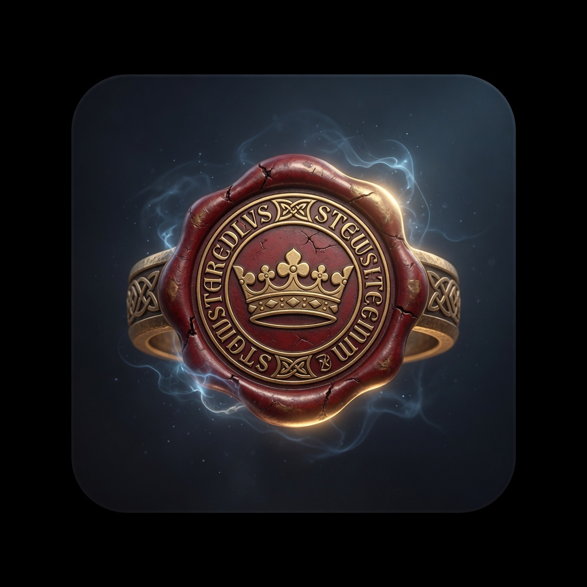
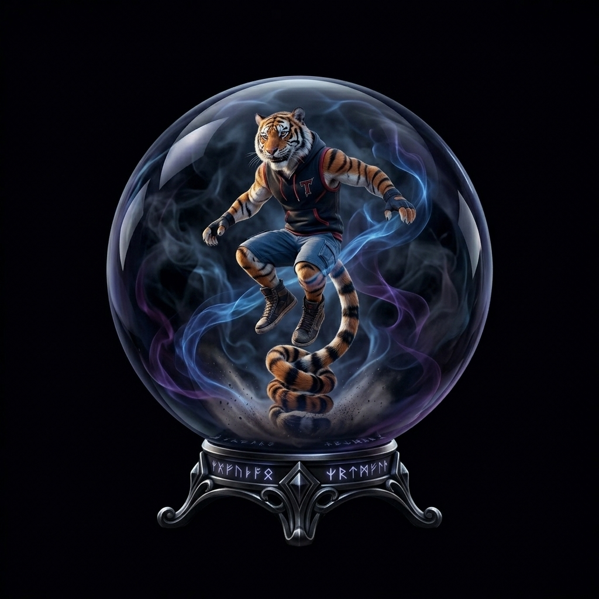

Candidate A · Seal of office
Royal steward seal
Gold seal / crown-of-office energy — authenticates work (butler), Foundry-style metal + glow.
Matched to Jumper / researchPrime / Financial Analyst brand style (cinematic, dark field, gold, full illustration). Flat SVG tray retired. Spelling: Ecgberht.

Gold seal / crown-of-office energy — authenticates work (butler), Foundry-style metal + glow.
Holds the campaign — architectural throne + charter light; steward semantics without cosplay face.
Crown over luminous ledger — Face/Strip metaphor; matches researchPrime energy density.

Cinematic orb, high detail.
Ziggurat + sunburst tile.
Navy + gold lattice render.
Jumper FULL/Heavy re-run in progress for more concepts. Pick A/B/C (or wait FULL results) for production icon.jpg.